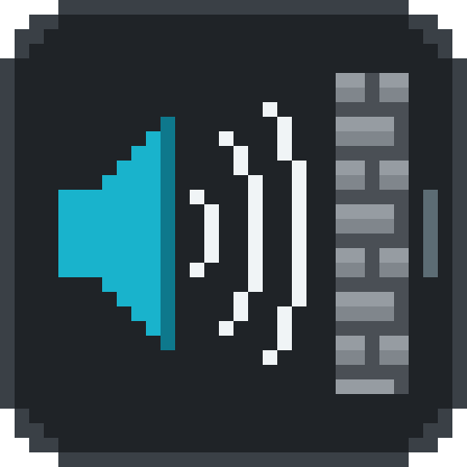

An addon for
Simple Voice Chat
Voice Physics
Proximity voice chat that sounds like the world around you.
Distance
Walls
Doorways
Echo
Water
Fabric · Quilt · Forge · NeoForge · Paper
1.16.5 – 26.x
voice
behind a wall